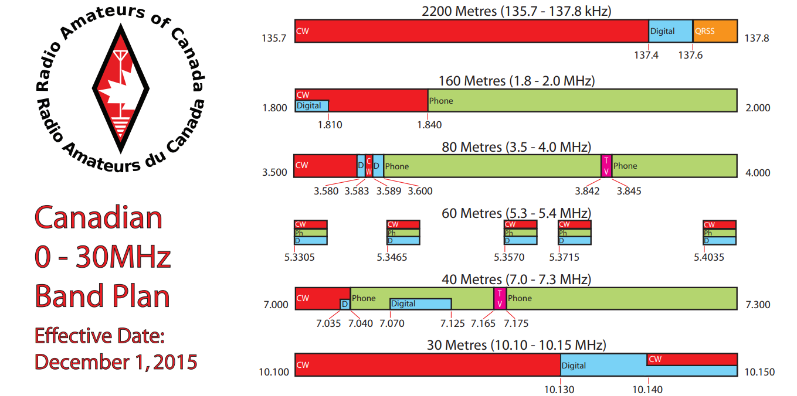

<!doctype html>
<html lang="en">
  <head>
    <meta charset="utf-8">

    <title>Decentralized Applications</title>

    <meta name="author" content="Doug Hoyte">

    <meta name="apple-mobile-web-app-capable" content="yes" />
    <meta name="apple-mobile-web-app-status-bar-style" content="black-translucent" />

    <meta name="viewport" content="width=device-width, initial-scale=1.0, maximum-scale=1.0, user-scalable=no, minimal-ui">

    <link rel="stylesheet" href="../reveal.js/css/reveal.css">
    <link rel="stylesheet" href="../reveal.js/css/theme/black.css" id="theme">

    <!-- Code syntax highlighting -->
    <link rel="stylesheet" href="../reveal.js/lib/css/zenburn.css">

    <!-- Printing and PDF exports -->
    <script>
      var link = document.createElement( 'link' );
      link.rel = 'stylesheet';
      link.type = 'text/css';
      link.href = window.location.search.match( /print-pdf/gi ) ? '../reveal.js/css/print/pdf.css' : '../reveal.js/css/print/paper.css';
      document.getElementsByTagName( 'head' )[0].appendChild( link );
    </script>

    <!--[if lt IE 9]>
    <script src="../reveal.js/lib/js/html5shiv.js"></script>
    <![endif]-->

    <style>
      .reveal .slides h1, .reveal .slides h2, .reveal .slides h3 {
        text-transform: none;
      }

      .two-column {
        display: flex;
        flex-wrap: wrap;
      }

      .two-column em {
        margin: 20px;
      }

      .reveal .big-and-bold {
        font-weight: bold;
        font-size: 135%;
      }

      .reveal .shrunk-a-bit {
        font-size: 90%;
      }

      .reveal .shrunk-a-bit pre {
        width: 100%;
      }

      .reveal pre {
        width: 100%;
      }

      .reveal .highlight {
        color: yellow;
        font-weight: bold;
      }

      .reveal .highlightRed {
        color: red;
        font-weight: bold;
      }

      .reveal .highlightGreen {
        color: green;
        font-weight: bold;
      }

      .left {
        left:-8.33%;
        text-align: left;
        float: left;
        width:50%;
        z-index:-10;
      }

      .right {
        left:31.25%;
        top: 75px;
        text-align: left;
        float: right;
        z-index:-10;
        width:50%;
      }

      .smallCode pre code {
        font-size: 80%;
      }
    </style>
  </head>

  <body>
    <div class="reveal">
      <div class="slides">

<!------------------------------------------------------->


<section data-markdown><script type="text/template">

## Decentralized Applications

### Lesson 1: FIXME

*Doug Hoyte, June 2019*

[https://is.gd/blockchaindapps](https://is.gd/blockchaindapps)

</script></section>


<section data-markdown><script type="text/template">

## Lesson Topics

</script></section>


<section data-markdown><script type="text/template">

## The original peer-to-peer app


</script></section>


<section data-markdown><script type="text/template">

## Radio

* Once people started using telegraph over the radio, there was a need to coordinate
* Large range of possible frequencies
  * How do you find somebody to communicate with?
  * How do you share with others?

</script></section>


<section data-markdown><script type="text/template">

## Modern-day decentralized radio


* A world-wide chatroom

</script></section>


<section data-markdown><script type="text/template">

## Band-plan



* "Band-plan" is centralized system that allocates frequencies

</script></section>


<section data-markdown><script type="text/template">

## Calling frequencies

* But even inside band-plan allocations, need to choose frequencies
* You're more likely to find somebody if you listen to 14.100000 MHz than 14.171383
  * Why?

</script></section>


<section data-markdown><script type="text/template">

## Coordination games

* Suppose you and I would like to meet
* I ask you to meet me in Paris tomorrow at noon
* But I don't say *where* in Paris
* Where do you go?

</script></section>


<section data-markdown><script type="text/template">


</script></section>


<section data-markdown><script type="text/template">

## Focal point (Schelling point)

* Why did you pick the Eiffel Tower?
  * Why not the Arc de Triomphe, or Notre-Dame, or some random cafe?
* Because the Eiffel tower is probably what *I* will pick. Why?
  * Because I assume you will pick it. Why?
    * Because you assume I will assume you will pick it. Why?
      * ...

</script></section>


<section data-markdown><script type="text/template">

## Focal point (Schelling point)

* Another example: You are locked in a room, and a stranger is locked in a separate room
* You are both given a list of numbers. If you pick the same number you are both released:
* 918348, 18773, 100000, 819991, 34380
* Which do you pick?
  * Why?

</script></section>


<section data-markdown><script type="text/template">

## Finding peers (IRC)

* In peer to peer apps, how do you find your peers?
* Early versions of bitcoin would join IRC channels #bitcoin00, #bitcoin01, ...
  * The users in there are probably running bitcoin software
  * Try to connect to them

</script></section>


<section data-markdown><script type="text/template">

## Finding peers (DNS)

* Many p2p applications also look-up DNS hostnames, which resolve to lists of peers
      $ host seed.bitcoin.sipa.be
      seed.bitcoin.sipa.be has address 51.77.251.16
      seed.bitcoin.sipa.be has address 38.242.12.100
      seed.bitcoin.sipa.be has address 109.130.21.25
      seed.bitcoin.sipa.be has address 52.221.194.33
      seed.bitcoin.sipa.be has address 52.192.233.133
      ...
* Sometimes clients embed IP addresses of nodes at the time the software was released

</script></section>


<section data-markdown><script type="text/template">

## Finding peers (other peers)


* Usually the P2P protocol has a way to tell peers about other nodes

</script></section>


<section data-markdown><script type="text/template">

## Eclipse attack


* An eclipse attack is when a malicious actor tries to isolate a node from the rest of the network

</script></section>


<section data-markdown><script type="text/template">

## Firewalls


* Often devices aren't directly connected to the internet
* For security: Hackers can't connect to protected devices

</script></section>


<section data-markdown><script type="text/template">

## Network Address Translation (NAT)


* Also used so multiple devices can share the same IP address

</script></section>


<section data-markdown><script type="text/template">

## P2P difficulties


* Firewalls/NATs stop inbound connections
* Makes peer-to-peer protocols harder

</script></section>


<section data-markdown><script type="text/template">

## UPnP and hole-punching


* UPnP is a standard that many routers/firewalls implement
  * Can request opening a port to the internet
* Also "hole punching" technique

</script></section>


<section data-markdown><script type="text/template">

## Detecting firewalls


* Sometimes you can learn information about a network by timing packets
* This is called a timing **side-channel**

</script></section>


<section data-markdown class="smallCode"><script type="text/template">

## Timing side-channel

    let user = db_query("SELECT * FROM user WHERE username = ?", username);

    if (!user) {
        return error("Username/password invalid");
    }

    if (!verifyHashedPassword(user.hashedPassword, password)) {
        return error("Username/password invalid");
    }

    return success();

* "Username/password invalid" message prevents hacker from knowing if a username exists
  * Or does it? What if we time the request?


</script></section>


<section data-markdown><script type="text/template">

## DNS Control Hierarchy


</script></section>


<section data-markdown><script type="text/template">

## Botnets

* A botnet is a group of machines ("bots") that have been compromised by a virus
* The virus author ("botnet herder") controls the bots and has them perform tasks
  * Click fraud
  * Denial of Service attacks

</script></section>


<section data-markdown><script type="text/template">

## Command-and-control

* How do botnet herders control their bots?
* If they just setup a server, it could be shutdown
  * Then they would lose access to their bots
* Similar problem domain with decentralized apps
  * Uncoordinated, P2P

</script></section>


<section data-markdown><script type="text/template">

## Domain generation algorithms

* Popularized by conficker botnet
* Every bot generates a list of gibberish domain names seeded with current day:
  * Today: **rhqysblftmjhlkc.com**
  * Tomorrow: **fwhmvhrixqdlaqm.com**
* Every bot tries to connect to these domains for commands
* Botnet herder just has to register one of these domains and put up temporary server

</script></section>


<section data-markdown><script type="text/template">

## Lab 1: Shrinker

[shrinker.html](shrinker.html)

</script></section>


<section data-markdown><script type="text/template">

## End of lesson

</script></section>


<!------------------------------------------------------->


      </div>

    </div>

    <script src="../reveal.js/lib/js/head.min.js"></script>
    <script src="../reveal.js/js/reveal.js"></script>

    <script>

      // Full list of configuration options available at:
      // https://github.com/hakimel/reveal.js#configuration
      Reveal.initialize({
        controls: true,
        progress: true,
        history: true,
        center: true,

        transition: 'none', // none/fade/slide/convex/concave/zoom

	math: {
          mathjax: '../lib/MathJax/MathJax.js',
          config: 'TeX-AMS_SVG-full',
	},

        // Optional reveal.js plugins
        dependencies: [
          { src: '../reveal.js/plugin/markdown/marked.js', condition: function() { return !!document.querySelector( '[data-markdown]' ); } },
          { src: '../reveal.js/plugin/markdown/markdown.js', condition: function() { return !!document.querySelector( '[data-markdown]' ); } },
          { src: '../reveal.js/plugin/highlight/highlight.js', async: true, callback: function() { hljs.initHighlightingOnLoad(); } },
          { src: '../reveal.js/plugin/math/math.js', async: true },
        ]
      });

    </script>

  </body>
</html>
